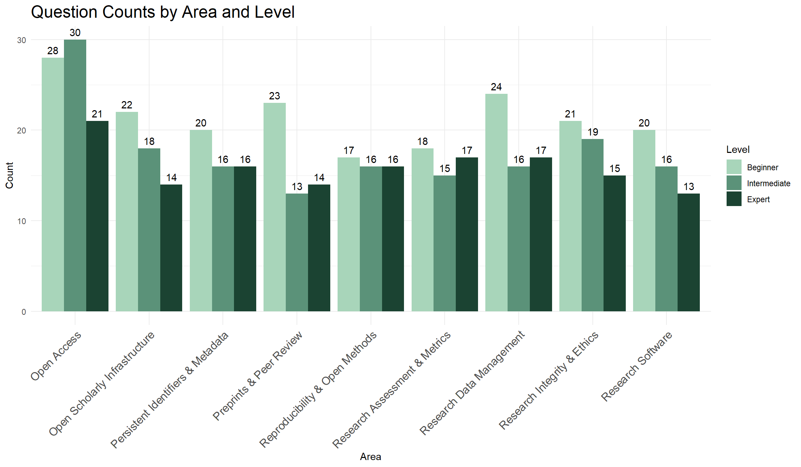

All Questions (Reference View)
A plain listing of every question in data/questions.csv with its five options, grouped by topic area and difficulty level — useful for proofreading the question bank without the answer key or explanations getting in the way. Correct answers and explanations are intentionally omitted; open the CSV directly if you need those.
viewAll = {
// Small element-builder, matching the helper used in index.qmd's quiz app.
function el(tag, { className, text, attrs } = {}) {
const node = document.createElement(tag);
if (className) node.className = className;
if (text != null) node.textContent = text;
if (attrs) for (const [k, v] of Object.entries(attrs)) node.setAttribute(k, v);
return node;
}
// Same fixed area order used by the quiz app (index.qmd), so both pages present
// topics in the same human-chosen sequence rather than alphabetically.
const AREA_ORDER = [
"Persistent Identifiers & Metadata",
"Research Data Management",
"Open Access",
"Research Assessment & Metrics",
"Research Integrity & Ethics",
"Reproducibility & Open Methods",
"Open Scholarly Infrastructure",
"Preprints & Peer Review",
"Research Software"
];
const LEVELS = ["Beginner", "Intermediate", "Expert"];
const OPTION_LETTERS = ["a", "b", "c", "d", "e"];
// Sort a copy of the rows by area, then level, then id, so the page reads as a
// clean, grouped reference rather than raw CSV row order.
const sorted = questions.slice().sort((a, b) => {
const areaDiff = AREA_ORDER.indexOf(a.area) - AREA_ORDER.indexOf(b.area);
if (areaDiff !== 0) return areaDiff;
const levelDiff = LEVELS.indexOf(a.level) - LEVELS.indexOf(b.level);
if (levelDiff !== 0) return levelDiff;
return a.id.localeCompare(b.id);
});
const root = document.createElement("div");
root.className = "view-all";
root.append(el("p", { className: "va-count", text: `${questions.length} questions total` }));
let currentArea = null;
let currentLevel = null;
for (const q of sorted) {
if (q.area !== currentArea) {
currentArea = q.area;
currentLevel = null;
const count = questions.filter(r => r.area === currentArea).length;
root.append(el("h2", { className: "va-area-heading", text: `${currentArea} (${count})` }));
}
if (q.level !== currentLevel) {
currentLevel = q.level;
root.append(el("h3", { className: "va-level-heading", text: currentLevel }));
}
const item = el("div", { className: "va-item" });
item.append(el("p", { className: "va-meta", text: q.id }));
item.append(el("p", { className: "va-question", text: q.question }));
const optionsList = document.createElement("ol");
optionsList.className = "va-options";
optionsList.type = "A";
for (const letter of OPTION_LETTERS) {
const text = q["option_" + letter];
if (text == null || text === "") continue;
optionsList.append(el("li", { text }));
}
item.append(optionsList);
if (q.source_url && q.source_url.trim()) {
const src = el("p", { className: "va-source" });
src.append(el("a", {
text: "Source ↗",
attrs: { href: q.source_url.trim(), target: "_blank", rel: "noopener" }
}));
item.append(src);
}
if (q.review_note && q.review_note.trim()) {
item.append(el("p", { className: "va-note", text: "⚑ " + q.review_note.trim() }));
}
root.append(item);
}
return root;
}